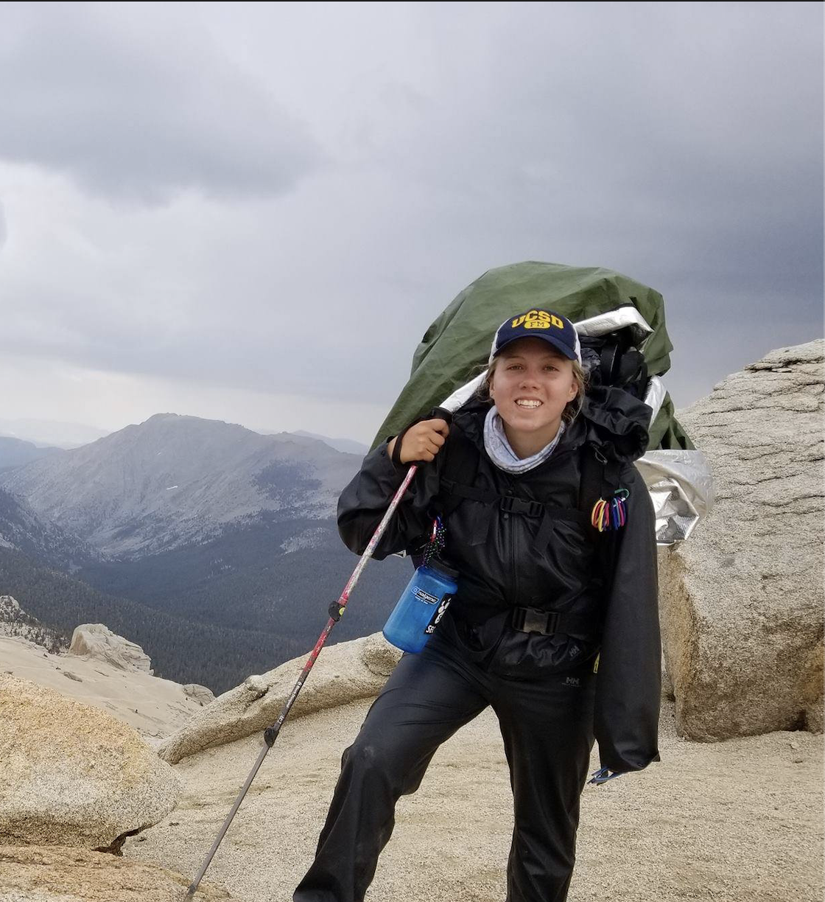

Sawyer Brand

I am an undergraduate Oceanic and Atmospheric Science (OAS) student at Scripps Institution of Oceanography (SIO) working as a research assistant to Lynne Talley and also writing a research paper under her supervision. My research is centered around using Argo floats to examine aspects of the Argentine Basin and Malvinas-Brazil Confluence. My current paper explores circulation of Pacific Deep Water into the Argentine Basin and my upcoming paper will revolve around how the Malvinas-Brazil Confluence affects CO2 uptake and outgassing in the region.
As a regular undergraduate speaker and mentor to the Oceanic and Atmospheric Science major, I began to see the importance of the opportunities I had access to. I had access to faculty, I had access to PhD students with whom I socialized, and their collective knowledge gave me an education in oceanography and climate science that most in my major don't get. Because I knew many faculty members, I was able to increase the number of undergraduates working at SIO by recommending them for positions that were usually filled by engineering undergraduates. This experience has lead me to advocate for other OAS students for almost my entire undergraduate career, including contributing to discussions about increasing OAS access to coding classes and also to research opportunities. To fill the vacuum left by a lack of accessible Python classes for our major, I have begun conducting Python classes in my spare time for those in my major who are interested. These classes are usually centered around oceanographic content but I also strive to ensure important coding skills are taught so my students can apply their new knowledge to any code problem. See the section "OAS" above for more details.
News
7/29/20: Submitted my abstract to AGU 2020 Fall Meeting
5/5/20: Scripps Spotlight on Sawyer Brand
2/19/20: I presented my research at the Ocean Sciences Meeting in San Diego